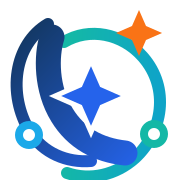

Orientación rápida
Encuentra por dónde empezar.
Dinos qué quieres mejorar y te indicaremos qué tipo de herramienta conviene explorar primero. Sin registros ni datos personales.

Brújula DigitalDinos qué quieres mejorar y te indicaremos qué tipo de herramienta conviene explorar primero. Sin registros ni datos personales.